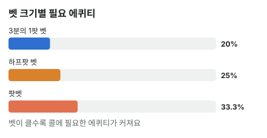

안녕하세요. 오늘은 홀덤 계산의 가장 기본인 팟오즈를 배워요.
상대가 벳했을 때 "왠지 이길 것 같아서 콜", "무서워서 폴드" 하던 걸, 오늘부터는 숫자 하나로 정할 수 있어요. 공식은 딱 하나인데, 그 공식이 왜 그렇게 생겼는지까지 처음부터 따라가 볼게요.
이 글에서 배울 것
- 팟오즈와 필요 에퀴티가 무엇이고, 둘이 어떻게 같은 이야기인지
- "우리가 낼 돈 ÷ 콜한 뒤 전체 팟" 공식이 왜 그렇게 생겼는지 직접 따져 보기
- 팟 크기와 상관없이 벳 크기 비율만 보고 필요 에퀴티를 바로 떠올리는 법
1단계. 먼저 단위와 용어
금액은 BB로 세요
BB(빅 블라인드)는 그 테이블의 기본 베팅 단위예요. 빅 블라인드 금액을 한 칸으로 보고 "몇 칸이냐"로 세는 거죠.
금액을 BB로 쓰면 블라인드가 큰 게임이든 작은 게임이든 같은 계산을 쓸 수 있어요. 이 글의 금액은 모두 BB예요.
팟오즈가 묻는 질문
상대가 벳을 하면 우리는 콜할지 폴드할지 정해야 해요. 이때 팟오즈가 묻는 건 딱 하나예요.
"이 콜이 본전이 되려면, 몇 번 중 몇 번은 이겨야 할까?"
팟오즈는 원래 "이기면 받을 돈 대 내가 낼 돈"의 비율이에요. 예를 들어 이기면 15BB를 벌고 콜에 5BB를 낸다면 15 대 5, 줄여서 3 대 1이라고 말해요.
이 비율을 %로 바꾼 게 필요 에퀴티예요. 필요 에퀴티 = "본전이 되는 승률"이고, 에퀴티 = 이 팟에서 이길 확률(비겨서 팟을 나누면 나눠 받는 몫만큼 쳐요)이에요. 이 블로그에서는 주로 필요 에퀴티(%)로 말할게요.
2단계. 공식은 하나
필요 에퀴티 = 우리가 낼 돈 ÷ 콜한 뒤 전체 팟
"콜한 뒤 전체 팟"은 세 덩어리를 더한 거예요.
- 원래 팟: 상대가 벳하기 전에 이미 있던 칩
- 상대 벳
- 우리 콜: 상대 벳과 같은 금액
비유: 칩을 모아 둔 상자
팟을 칩이 모인 상자라고 생각해 보세요. 상자 안에는 원래 있던 칩, 상대가 방금 넣은 칩, 그리고 우리가 넣을 칩이 들어가요. 이기면 이 상자를 통째로 가져와요.
우리가 새로 넣는 칩이 상자 전체에서 차지하는 비율, 딱 그만큼은 이겨야 본전이에요. 상자의 4분의 1을 넣었다면 4번 중 1번은 가져와야 손해가 없죠.
3단계. 공식이 왜 이렇게 생겼을까
공식을 외우기 전에, 정말 맞는지 직접 따져 볼게요. 팟 10BB에 상대가 5BB 벳한 장면이에요.
4번 콜해 보면
같은 콜을 4번 하고, 그중 1번만 이긴다고 해 볼게요.
- 4번 콜하면 낸 돈은 5 × 4 = 20BB
- 1번 이기면 받는 돈은 콜한 뒤 전체 팟, 10 + 5 + 5 = 20BB
낸 돈과 받은 돈이 똑같아요. 딱 본전이죠. 그래서 이 콜은 4번 중 1번, 25%만 이기면 돼요.
공식은 이걸 한 줄로 줄인 것
필요 에퀴티 = 5(우리 콜) ÷ (10(원래 팟) + 5(상대 벳) + 5(우리 콜)) = 5 ÷ 20 = 25%
위의 계산과 똑같은 숫자가 나와요. "콜한 뒤 전체 팟"으로 나누는 이유는, 이긴 판에서 돌려받는 게 그 팟 전체이기 때문이에요. 그 안에 이번에 우리가 낸 5BB도 들어 있어요.
팟오즈 "3 대 1"과도 같은 이야기
같은 장면을 팟오즈로 말해 볼게요. 이기면 원래 팟 10BB와 상대 벳 5BB, 합쳐서 15BB를 순수하게 벌어요. 내는 돈은 5BB예요.
15 ÷ 5 = 3, 즉 3 대 1이에요. "3번 지고 1번 이겨도 본전"이라는 뜻이죠. 3 + 1 = 4번 중 1번이니까 25%, 공식과 같은 답이에요.
이게 무슨 뜻이냐면, "몇 대 1"을 %로 바꿀 땐 앞 숫자에 1을 더해서 나누면 된다는 거예요. 3 대 1이면 4번 중 1번이에요.
4단계. 예시 세 개로 익히기
이번에는 벳 크기를 바꿔 가며 볼게요. 작은 벳 → 하프팟 → 팟벳 순서예요.
예시 1 — 작은 벳 (팟의 3분의 1)
팟 12BB에 상대가 4BB 벳.
필요 에퀴티 = 4 ÷ (12 + 4 + 4) = 4 ÷ 20 = 20%
5번 중 1번이면 돼요.
예시 2 — 하프팟 (팟의 절반)
팟 10BB에 상대가 5BB 벳. 3단계에서 따져 본 그 장면이라 25%, 4번 중 1번이에요.
예시 3 — 팟벳 (팟만큼)
팟 10BB에 상대가 10BB 벳.
필요 에퀴티 = 10 ÷ (10 + 10 + 10) = 10 ÷ 30 = 33.3%
3번 중 1번이에요. 원래 팟·상대 벳·우리 콜, 세 덩어리가 똑같으니까 3분의 1이죠.

규칙이 보여요
세 예시를 나란히 놓으면 20% → 25% → 33.3%예요. 팟에 비해 상대 벳이 클수록 필요 에퀴티가 올라가요.
여기서 중요한 건 "벳 금액"이 아니라 "팟에 비한 벳 크기"예요. 예시 1의 벳 4BB와 예시 2의 벳 5BB는 금액이 거의 같지만, 팟에 비한 크기가 3분의 1과 절반으로 달라요.
왜 그럴까: 필요 에퀴티는 팟 크기가 아니라 "비율"로 정해져요
팟을 1로 놓아 보면
하프팟 벳이면 팟이 10BB든 그 열 배든 필요 에퀴티가 똑같아요. 직접 확인해 볼게요.
팟을 1이라고 놓으면, 하프팟 벳은 0.5, 우리 콜도 0.5, 콜한 뒤 팟은 1 + 0.5 + 0.5 = 2예요. 그러면 0.5 ÷ 2 = 0.25, 똑같이 25%예요.
공식의 위아래가 같은 비율로 커지고 작아지니까, 팟의 크기는 지워지고 벳이 팟의 몇 분의 몇이냐만 남는 거예요.
그래서 어떤 벳이든 이 한 줄로 구할 수 있어요. 필요 에퀴티 = 벳 ÷ (팟 + 벳 × 2). 벳이 팟의 3분의 1이면 팟을 3, 벳을 1로 놓고 1 ÷ (3 + 1 × 2) = 0.2, 5번 중 1번이에요.
그래서 실전에서는 계산기가 필요 없어요
벳 크기 비율 몇 개만 기억해 두면 돼요.
- 팟의 3분의 1 벳 → 5번 중 1번
- 하프팟 벳 → 4번 중 1번
- 팟벳 → 3번 중 1번
상대가 벳하면 "팟의 얼마짜리지?" 하고 보고, 바로 "4번 중 1번" 같은 말이 떠오르면 충분해요. 벳 크기별 표는 B15에서 한 번에 정리해요.
벳이 클수록 왜 더 자주 이겨야 할까
벳이 커지면 우리가 낼 돈과, 이기면 받을 돈이 같은 금액만큼 함께 늘어요. 그런데 원래 팟은 그대로예요.
그래서 "낼 돈에 비해 받을 돈"의 비율은 점점 작아져요. 하프팟은 3 대 1이었는데, 팟벳은 이기면 20BB를 벌고 10BB를 내니 20 ÷ 10 = 2, 2 대 1밖에 안 돼요. 받는 돈이 상대적으로 적으니, 더 자주 이겨야 본전이 맞는 거예요.
자주 하는 실수
실수 1. 분모에 우리 콜을 빼먹기 하프팟 장면에서 5 ÷ (10 + 5)로 계산하면 33.3%가 나와요. 진짜 필요 에퀴티 25%보다 훨씬 높게 잡는 거죠. 필요 에퀴티를 실제보다 높게 잡으니 콜 기준이 쓸데없이 빡빡해져요. 대신 분모는 언제나 원래 팟 + 상대 벳 + 우리 콜, 세 덩어리로 세요.
실수 2. "3 대 1이니까 3번 중 1번" "대"를 "중"으로 읽기 쉬워서 헷갈리는 부분이에요. 3 대 1은 "3번 지고 1번 이김"이라 4번 중 1번, 25%예요. 3번 중 1번(33.3%)으로 읽으면 하프팟을 팟벳처럼 무섭게 보게 돼요. 대신 앞 숫자에 1을 더해서 나누세요.
실수 3. "팟에 있는 칩 중 우리가 낸 건 우리 돈이니까 빼고 계산" 하프팟 장면의 원래 팟 10BB 안에 앞 스트리트에서 우리가 넣은 칩이 들어 있어도, 그 칩은 이미 팟의 칩이에요. 그걸 빼고 팟을 작게 잡으면 같은 5BB 벳이 팟에 비해 커 보여서, 필요 에퀴티가 25%보다 높게 나와요. 대신 지난 베팅은 잊고, 지금 팟에 있는 칩 전부를 원래 팟으로 넣으세요.
"딜러가 '팟 15'라고 하면, 그게 원래 팟이에요?"
좋은 질문이에요. 상대가 벳한 뒤에 보이는 팟은 원래 팟에 상대 벳이 이미 더해진 지금 팟이에요. 하프팟 장면이라면 원래 팟 10BB + 상대 벳 5BB = 지금 팟 15BB죠.
공식에 넣을 때는 둘 중 하나로 맞추면 돼요.
- 원래 팟으로: 5 ÷ (10 + 5 + 5)
- 지금 팟으로: 5 ÷ (15 + 5)
둘 다 5 ÷ 20, 같은 25%예요. 아래 연습 문제의 계산기 [콜 수익] 칸은 지금 팟을 넣는 방식이니, 원래 팟에 상대 벳을 더한 금액을 넣으세요.
선생님의 한마디
- 상대가 벳하면 금액보다 먼저 "팟의 몇 분의 몇이지?"
- "몇 대 1"로 들으면 앞 숫자에 1을 더해 몇 번 중 1번으로 바꾸기
- 지난 스트리트에 낸 칩은 잊고 지금 팟 전부로 계산하기
연습 문제
홀덤학습 에퀴티 계산기에서 내 카드를 고른 뒤 [콜 수익] 칸에 지금 팟(상대 벳 포함)과 콜 금액을 넣으면 필요 에퀴티가 나와요.
문제 1. 팟 20BB에 상대가 5BB 벳(팟의 4분의 1). 필요 에퀴티는? 몇 번 중 1번이면 될까요?
정답 보기
필요 에퀴티 = 5 ÷ (20 + 5 + 5) = 5 ÷ 30 = 16.7%. 6번 중 1번이면 본전이에요. 오늘 본 어떤 벳보다 작은 벳이라 기준도 가장 낮아요.
문제 2. 팟 9BB에 상대가 6BB 벳(팟의 3분의 2). 필요 에퀴티는?
정답 보기
필요 에퀴티 = 6 ÷ (9 + 6 + 6) = 6 ÷ 21 = 28.6%. 하프팟(25%)과 팟벳(33.3%) 사이예요.
핵심 정리
- 팟오즈는 "순수하게 버는 돈 대 낼 돈", 필요 에퀴티는 그걸 %로 바꾼 본전 승률이에요(3 대 1 = 4번 중 1번)
- 공식의 분모가 "콜한 뒤 전체 팟"인 이유는 이긴 판에 돌려받는 게 그 팟 전체이기 때문이에요
- 필요 에퀴티는 팟 크기가 아니라 벳이 팟의 몇 분의 몇이냐로 정해져요
- 벳이 커지면 낼 돈과 받을 돈이 같이 늘지만 원래 팟은 그대로라, 더 자주 이겨야 해요
정리하며
오늘은 "콜하려면 몇 번 이겨야 하나"를 공식 하나로 구했어요.
4번 콜해서 1번 이기면 낸 돈과 받은 돈이 같아진다는 걸 직접 따져 보니, 공식이 왜 "콜한 뒤 전체 팟"으로 나누는지 보였죠. 그리고 팟을 1로 놓아 보니, 결국 기준을 정하는 건 팟에 비한 벳 크기 하나였어요.
예를 들어 리버에 상대가 하프팟을 걸었다면, 그 콜은 4번 중 1번만 이기면 본전인 콜이에요. 실전에서는 상대 벳을 보자마자 이렇게 몇 번 중 1번을 떠올리세요.
다음 글 B09에서는 잠시 계산을 내려놓고, 너무 많은 핸드로 판에 들어가면 왜 손해인지 핸드 고르는 이야기를 해요. 오늘 구한 필요 에퀴티를 우리가 실제로 이길 확률과 나란히 놓는 법은 B14에서 배워요.
AI 작성 · 숫자는 계산 검증